Creating a research-driven app concept to improve museum visitor retention
In April, 2026 I joined University of Washington's chapter of Alpha Theta Delta, the world's first interdisciplinary design fraternity. Over the next two months, I worked with 14 other designers to create an app concept to improve museum student visitor retention in Seattle.
Problem
A decline in visitors
Seattle is home to dozens of museums, however, over the past decade Seattle museums have seen a steady decline in visitor engagement and ticket sales.
Research
The student museum experience
To simplify such a broad issue, we focused on student museum visitors and why their numbers are declining. My 15 person cohort split into groups of 5 to work on different research methods.
Field Research
Combined, my group visited 6 local museums, observing museum structures, exhibit layouts, accessibility features, and visitors.
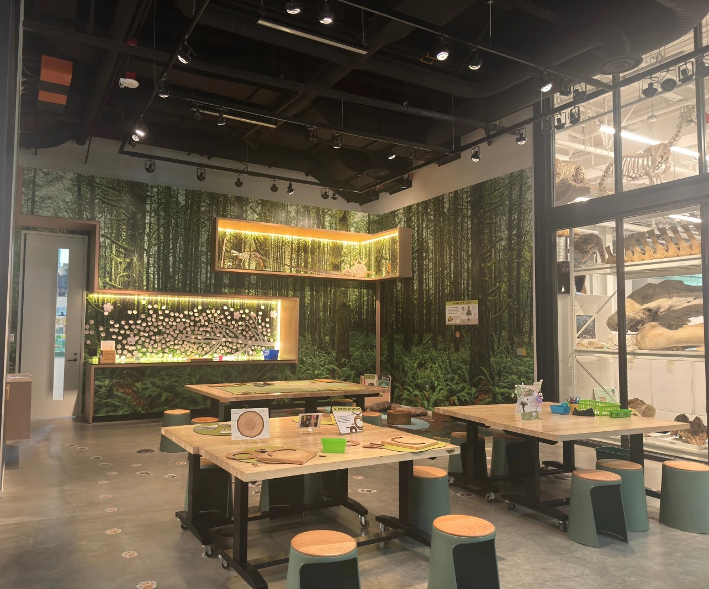
Surveys
10-questions. 98 student responses. Here’s what we found:
visit museums once to a few times per year
say museum visits are costly
Interviews
7 UW student interviews, including a local artist and both native and international students.
Interview 1
International student at UW
“I would like to see smaller and more interactive exhibits.”
“The bigger museums sometimes have translations, but I wish more museums have options in language audio description.”
Based on our research, I built two personas with needs, goals, and pain points, representing the range of student museum visitors in Seattle.
Charlotte Kim
Bio
- International art student
- Visits museums and art galleries to explore Seattle and learn about different cultures.
- Likes to explore art galleries for artistic inspiration.
Pain Points
- Prefers to go alone.
- Finds museums difficult to navigate.
- “I would have liked multi-language accessibility in museums.”
Goals
- Understand exhibits in native language.
- Visit museums tuned to her interests.
- Awareness of new exhibits/museums.
- Spend more time at museum.
Thomas Brown
Bio
- Doesn’t like museums because they are expensive.
- Finds exhibitions boring.
- Prefers to bring people with him.
Pain Points
- “I don’t have the attention span to read all the blurbs for the pieces.”
- He doesn’t frequent them very often, but when he does it’s “not for leisure, because of free tickets.”
- Wishes museums were cheaper and more dynamic.
Goals
- Find interesting exhibits.
- Third space to hang out with friends.
- Absorb the content more actively.
After analyzing all data, we identified three main pain points:
Accessibility
Language accessibility and worries of inaccessibility driving away customers.
Museum Fatigue
5/7 interviewees mentioned feeling overwhelmed by the size of museums.
Financial Priorities
39% of surveyed applicants said that museums were too costly to attend.
Lo-Fi Ideation
Storyboarding the experience
We used identified pain points to imagine necessary features. Here we demonstrated how a pathfinding feature allows students to navigate museums based on personal interests and preferences.
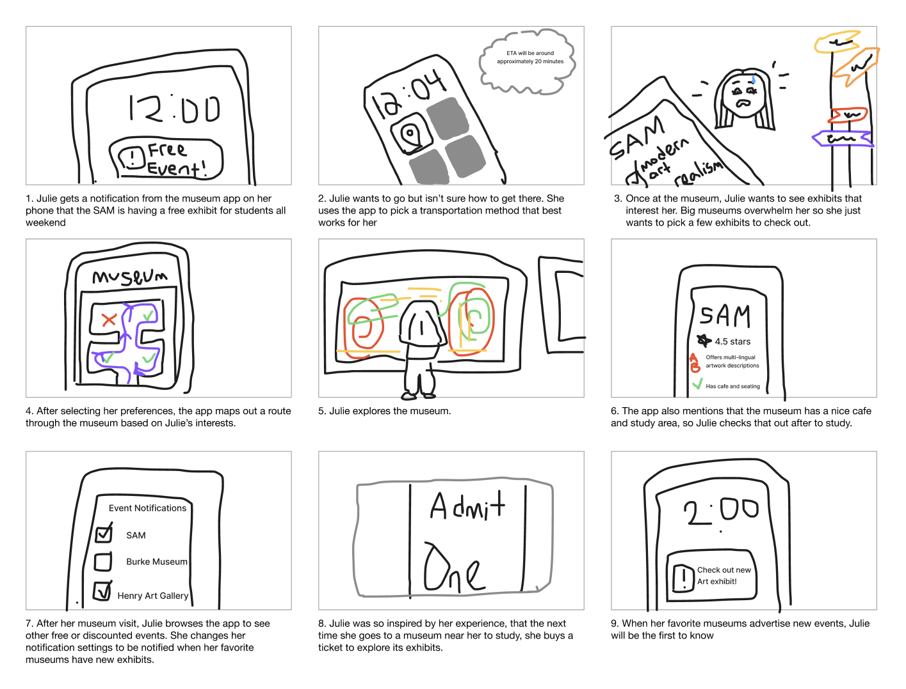
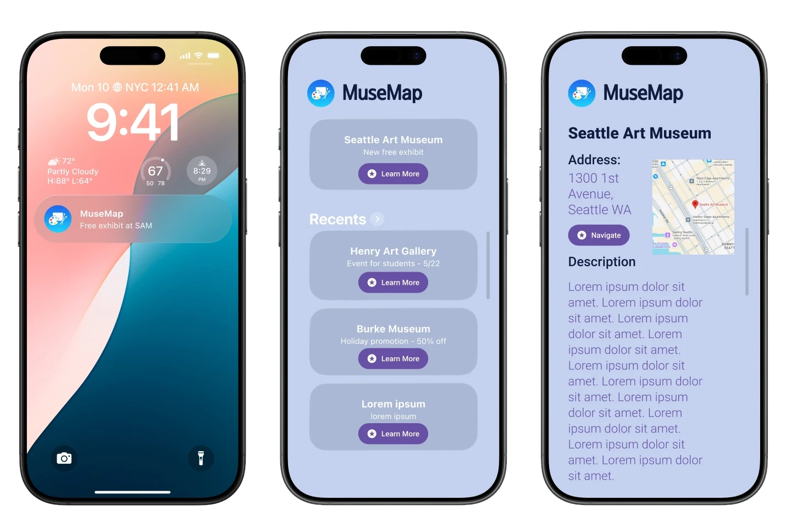
First app design iteration showing deals to help inform students about ongoing offers.
Mid-Fi Ideation
Brainstorming features
For part two of ideation we had three new teams: Branding, App Design, and my group, Ideation.
We went through the interviews again and identified user needs. Based on that we came up with a general app structure. We prioritized event outreach and advertizing features, and creating an easily customizable user experience.
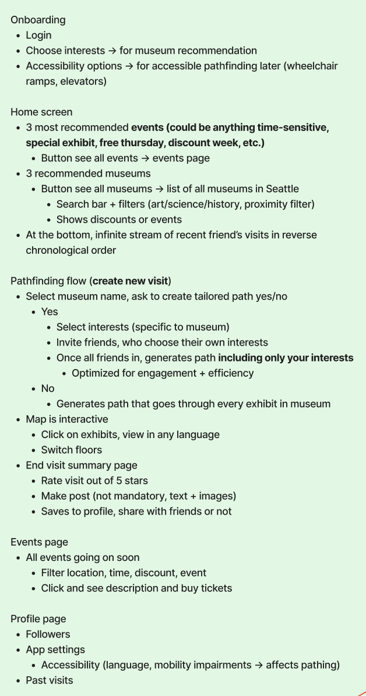
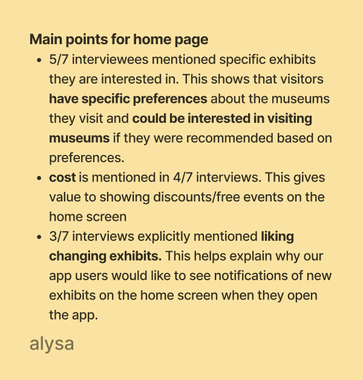
Design
Mapping the user flow
The final user flow of the entire app from onboarding to profile management based on the necessary features.
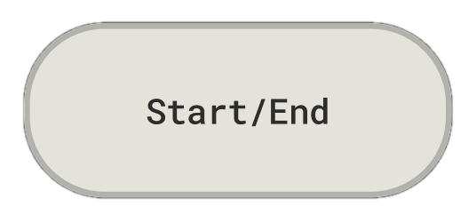
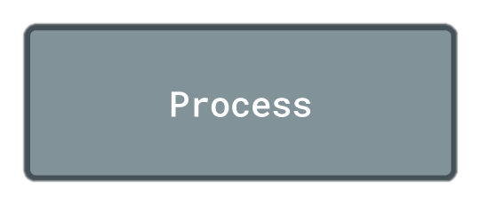
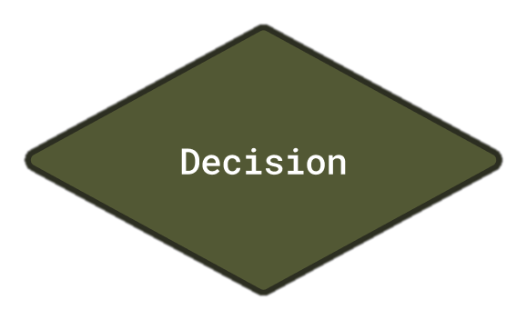
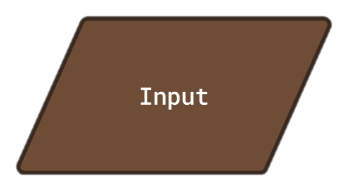
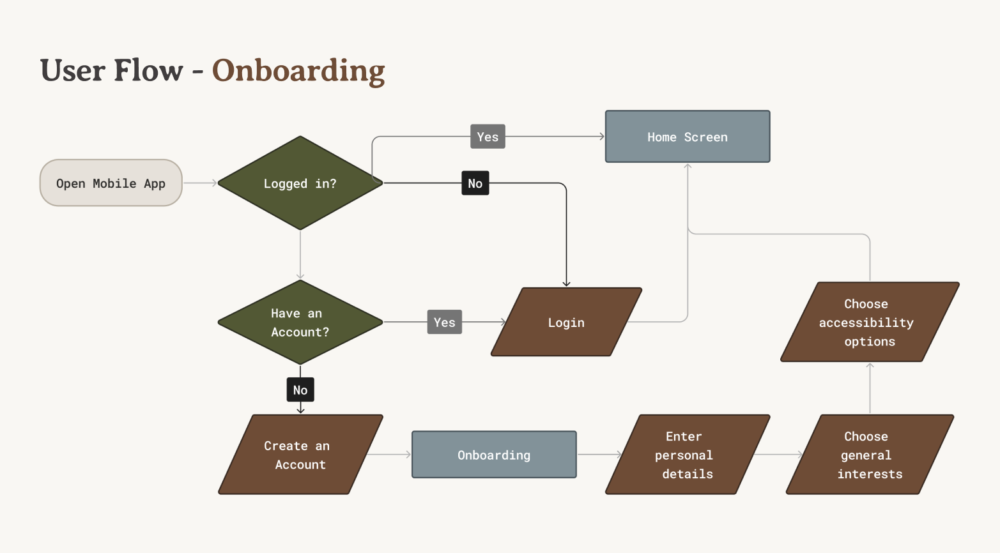
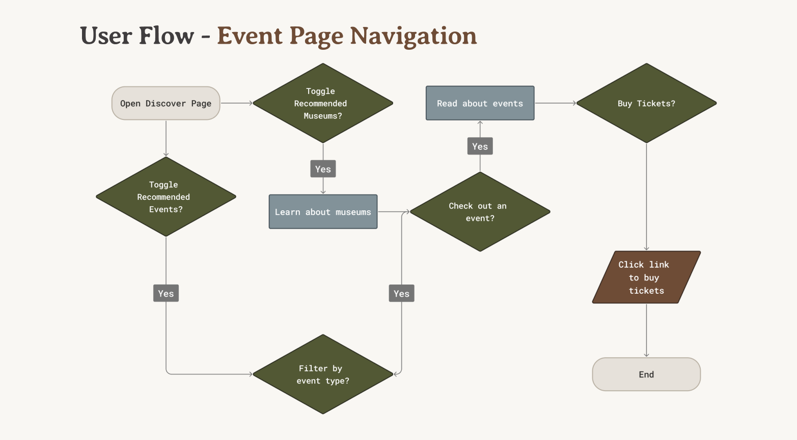
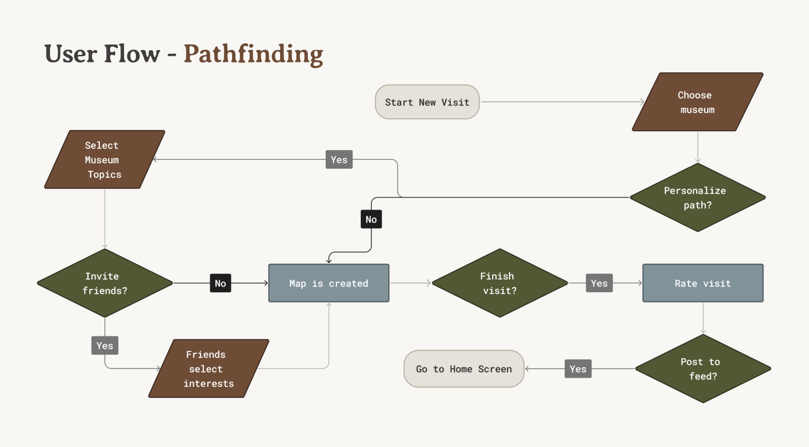
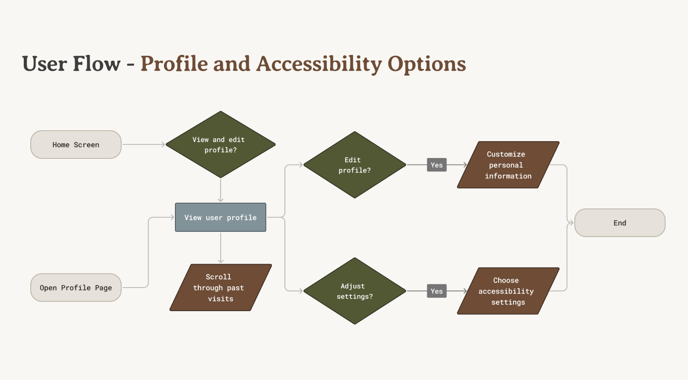
For the remainder of the project, we worked closely with the App Design team to solidify logistics and features, and direct the design development. Once the design was finalized, we worked with the rest of the team to make sure our process was properly documented and ready to present.
Outcome
Reflection
This project allowed me to play every role in the design process, from inception to execution. After completing the final design, we presented and defended our solution to over 30 members of the Alpha Theta Delta fraternity, who were extremely impressed with our process and result.
Understanding the problem to drive the solution
Although cost was a significant factor in driving away regular visitors, I encouraged the team not to focus on that problem because it wasn't feasible. Instead, I advocated to improve other aspects of the museum experience in our solution, like using engaging digital features. One of these features, museum pathfinding, became one of the most important and unique aspects of our solution.
Seeing the little things
Rereading every interview and dozens of survey responses allowed me to notice subtle user needs. Although language accessibility was mentioned by few, I thought it was important to consider due to the range of cultural backgrounds present in Seattle universities. I brought it to the attention of my team while I built the user personas, and we were able to include features centered around it in the final design.
Thinking outside the box
Although I was thorough in my research and feature design, I wish I advocated towards more unconventional solutions. Because students had many reasons not to visit museums, it would have been interesting to focus on specific issues and create more unique solutions than an app. For example, a common issue students brought up was a lack of transportation to museums. It could be interesting to explore a physical solution that curates transportation to museums, such as a shuttle service or a bus route, instead of resorting to digital solutions.